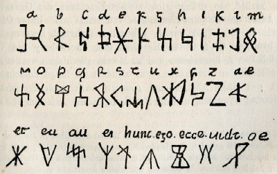

"Nemnius istas reperit literas[,*] uituperante quidem scolastico saxonici generis quia Brittones non haberent rudimentum; at ipse subito ex machinatione mentis suae formauit eas ut uituperationem et hebitudinem deieceret gentis suae; de figuris et de nominibus dicens..."*
 More to come. In the meantime, on this page there's the start of the text and an facsimile of the alphabet. Nennius' mock alphabet was based on Futhorc. You can find out more about this writing system at Omniglot.